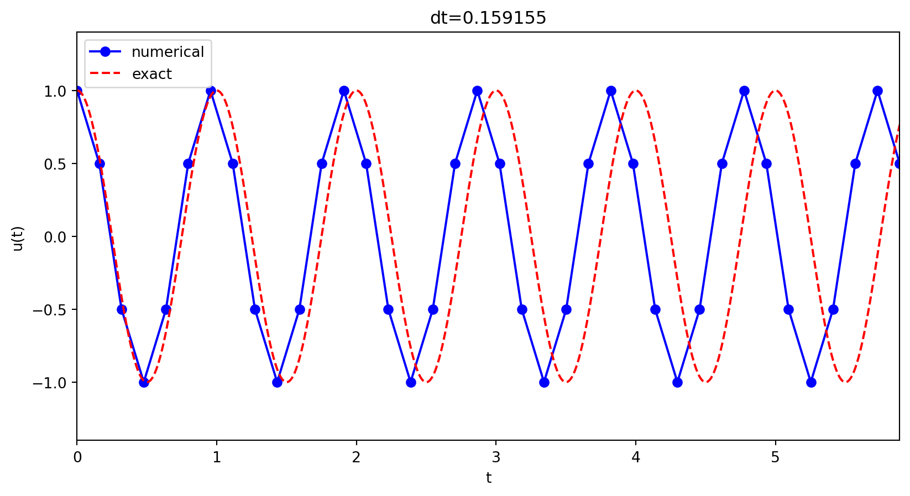
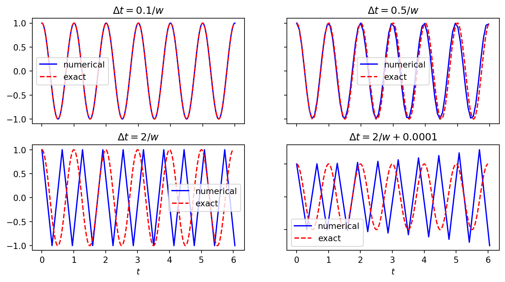
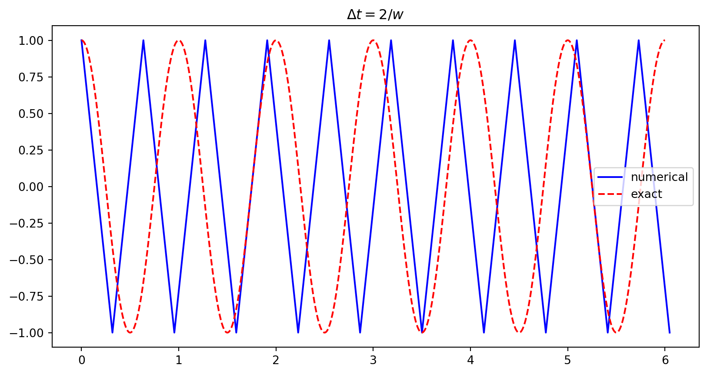
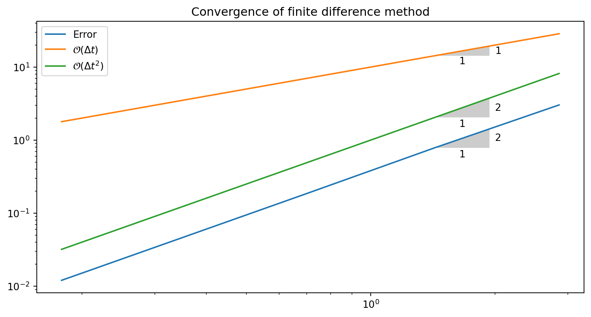
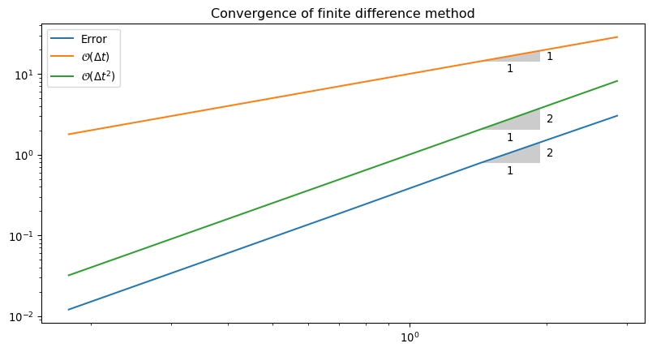

MATMEK-4270
The vibration equation is given as
\[ u^{\prime\prime}(t) + \omega^2u(t) = 0,\quad u(0)=I,\ u^{\prime}(0)=0,\ t\in (0,T] \]
and the exact solution is:
\[ u(t) = I\cos (\omega t) \]
Strategy: follow the four steps of the finite difference method.
Step 1: Introduce a time mesh, here uniform on \([0,T]\): \[ t_n=n\Delta t, \quad n=0, 1, \ldots, N_t \]
\[ u^{\prime\prime}(t_n) + \omega^2u(t_n) = 0,\quad n=2,\ldots,N_t \]
Step 3: Approximate derivative(s) by finite difference approximation(s). Very common (standard!) formula for \(u^{\prime\prime}\):
\[ u^{\prime\prime}(t_n) \approx \frac{u^{n+1}-2u^n + u^{n-1}}{\Delta t^2} \]
Insert into vibration ODE:
\[ \frac{u^{n+1}-2u^n + u^{n-1}}{\Delta t^2} = -\omega^2 u^n \]
Step 4: Formulate the computational algorithm. Assume \(u^{n-1}\) and \(u^n\) are known, solve for unknown \(u^{n+1}\):
\[ u^{n+1} = 2u^n - u^{n-1} - \Delta t^2\omega^2 u^n \]
Nick names for this scheme: Störmer’s method or Verlet integration.
The scheme is a recurrence relation. That is, \(u^{n+1}\) is an explicit function of one or more of the solutions at previous time steps \(u^n, u^{n-1}, \ldots\). We will later see implicit schemes where the solution for \(u^{n+1}\) depends also on \(u^{n+2}, u^{n+3}\) etc.
Option 1: Use a forward difference
\[ \begin{align*} u^{\prime}(0) &= \frac{u^1-u^0}{\Delta t}=0 &\longrightarrow u^1=u^0=I \\ u^{\prime}(0) &= \frac{-u^2+4u^1-3u^0}{2 \Delta t}=0 \quad &\longrightarrow u^1=\frac{u^2+3u^0}{4} \end{align*} \]
Note
First is merely first order accurate, second is second order, but implicit (depends on the unknown \(u^2\).)
Use the discrete ODE at \(t=0\) together with a central difference at \(t=0\) and a ghost cell \(u^{-1}\). The central difference is
\[ \frac{u^1-u^{-1}}{2\Delta t} = 0\quad\Rightarrow\quad u^{-1} = u^1 \]
The vibration scheme for \(n=0\) is
\[ u^{1} = 2u^0 - u^{-1} - \Delta t^2\omega^2 u^0 \]
Use \(u^{-1}=u^1\) to get
\[ u^1 = u^0 - \frac{1}{2} \Delta t^2 \omega^2 u^0 \]
Note
Second order accurate and explicit (does not depend on unknown \(u^2\)).
More precisely expressed in Python:
The code is difficult to vectorize, so we should use Numba or Cython for speed.
\(u\) is often displacement/position, \(u^{\prime}\) is velocity and can be computed by
\[ u^{\prime}(t_n) \approx \frac{u^{n+1}-u^{n-1}}{2\Delta t} \]
Note
For \(u^{\prime}(t_0)\) and \(u^{\prime}(t_{N_t})\) it is possible to use forward or backwards differences, respectively. However, we already know from initial conditions that \(u^{\prime}(t_0) = 0\) so no need to use finite difference there.
def solver(I, w, dt, T):
"""
Solve u'' + w**2*u = 0 for t in (0,T], u(0)=I and u'(0)=0,
by a central finite difference method with time step dt.
"""
dt = float(dt)
Nt = int(round(T/dt))
u = np.zeros(Nt+1)
t = np.linspace(0, Nt*dt, Nt+1)
u[0] = I
u[1] = u[0] - 0.5*dt**2*w**2*u[0]
for n in range(1, Nt):
u[n+1] = 2*u[n] - u[n-1] - dt**2*w**2*u[n]
return u, t
def u_exact(t, I, w):
return I*np.cos(w*t)def visualize(u, t, I, w):
plt.plot(t, u, 'r--o')
t_fine = np.linspace(0, t[-1], 1001) # very fine mesh for u_e
u_e = u_exact(t_fine, I, w)
plt.plot(t_fine, u_e, 'b-')
plt.legend(['numerical', 'exact'], loc='upper left')
plt.xlabel('t')
plt.ylabel('u(t)')
dt = t[1] - t[0]
plt.title('dt=%g' % dt)
umin = 1.2*u.min(); umax = -umin
plt.axis([t[0], t[-1], umin, umax])
We see that \(\Delta t = 2/\omega\) is a limit. Using longer \(\Delta t\) leads to growth. Why?
The exact solution to the continuous vibration equation is
\[ u_e(t) = I \cos (\omega t) \]
The key to study the numerical solution is knowing that linear difference equations like
\[ u^{n+1} = (2-\Delta t^2\omega^2) u^n - u^{n-1} \]
admit solutions of the form
\[ u^{n+1} = A u^n \quad \text{or} \quad u^n = A^n I \]
where \(I\) is an initial condition. This is a recursion relation exactly like the one used for the exponential decay model.
We now have (at least) two possibilities
We follow Langtangen’s approach (1) first. Note that since
\[ e^{i \tilde{\omega} \Delta t} = \cos (\tilde{\omega} \Delta t ) + i \sin(\tilde{\omega} \Delta t) \]
we can work with a complex A and let the real part represent the physical solution.
The exact discrete solution is then
\[ u(t_n) = I \cos (\tilde{\omega} t_n) \]
and we can study the error in \(\tilde{\omega}\) compared to the true \(\omega\).
Insert the numerical solution \(u^n = I \cos (\tilde{\omega} t_n)\) into the discrete equation
\[ \frac{u^{n+1} - 2u^n + u^{n-1}}{\Delta t^2} + \omega^2 u^n = 0 \]
Quite messy, but Wolfram Alpha (or another long derivation in the FD for PDEs book) will give you
\[ \begin{align} \frac{u^{n+1} - 2u^n + u^{n-1}}{\Delta t^2} &= \frac{I}{\Delta t^2} (\cos (\tilde{\omega} t_{n+1}) - 2 \cos (\tilde{\omega} t_n) + \cos (\tilde{\omega} t_{n-1})) \\ &= \frac{2 I}{\Delta t^2} (\cos (\tilde{\omega} \Delta t) - 1) \cos (\tilde{\omega} n \Delta t) \\ &= -\frac{4}{\Delta t^2} \sin^2 (\tilde{\omega} \Delta t) \cos (\tilde{\omega} n \Delta t) \end{align} \]
\[ \frac{u^{n+1} - 2u^n + u^{n-1}}{\Delta t^2} + \omega^2 u^n = 0 \]
We get
\[ -\frac{4}{\Delta t^2} \sin^2 (\tilde{\omega} \Delta t) { \cos (\tilde{\omega} n \Delta t)} + { \omega^2 { \cos (\tilde{\omega} n \Delta t)}} = 0 \]
and thus
\[ \omega^2 = \frac{4}{\Delta t^2} \sin^2 \left( \frac{\tilde{\omega} \Delta t}{2} \right) \]
Solve for \(\tilde{\omega}\) by taking the root and using \(\sin^{-1}\)
\[ \tilde{\omega} = \pm \frac{2}{\Delta t} \sin^{-1} \left( \frac{\omega \Delta t }{2} \right) \]
How good is the approximation \(\tilde{\omega} = \pm \frac{2}{\Delta t} \sin^{-1} \left( \frac{\omega \Delta t }{2} \right)\) ?
We can easily use a Taylor series expansion for small \(h=\Delta t\)
So the numerical frequency i always too large (to fast oscillations): \[ \tilde\omega = \omega\left( 1 + \frac{1}{24}\omega^2\Delta t^2\right) + {\cal O}(\Delta t^3) \]
Note
What happens if we simply use \(\omega = \omega(1-\omega^2 \Delta t^2 /24)\)?
The leading order numerical error disappears and we get
\[ \tilde\omega = \omega\left( 1 - \left(\frac{1}{24}\omega^2\Delta t^2\right)^2\right) + \cdots \]
Note
Dirty trick, and only usable when you can compute the numerical error exactly
\[ u^n = I\cos\left(\tilde\omega n\Delta t\right),\quad \tilde\omega = \frac{2}{\Delta t}\sin^{-1}\left(\frac{\omega\Delta t}{2}\right) \]
The error mesh function,
\[ e^n = u_{e}(t_n) - u^n = I\cos\left(\omega n\Delta t\right) - I\cos\left(\tilde\omega n\Delta t\right) \]
is ideal for verification and further analysis!
\[ \begin{align*} e^n &= I\cos\left(\omega n\Delta t\right) - I\cos\left(\tilde\omega n\Delta t\right) \\ &= -2I\sin\left(n \Delta t\frac{1}{2}\left( \omega - \tilde\omega\right)\right) \sin\left(n \Delta t\frac{1}{2}\left( \omega + \tilde\omega\right)\right) \end{align*} \]
We can easily show convergence (i.e., \(e^n\rightarrow 0 \hbox{ as }\Delta t\rightarrow 0\)) from what we know about sines in the error
\[ e^n = -2I\sin\left(n \Delta t\frac{1}{2}\left( \omega - \tilde\omega\right)\right) \sin\left(n \Delta t \frac{1}{2}\left( \omega + \tilde\omega\right)\right) \] and the following limit \[ \lim_{\Delta t\rightarrow 0} \tilde\omega = \lim_{\Delta t\rightarrow 0} \frac{2}{\Delta t}\sin^{-1}\left(\frac{\omega\Delta t}{2}\right) = \omega \]
The limit can be computed using L’Hopital’s rule or simply by asking sympy or WolframAlpha. Sympy is easier:
Solutions are oscillatory, so not a problem that \(A<0\), like for the exponential decay
Solutions should have constant amplitudes (constant \(I\)), but we will have growth if
\(|A| > 1\)
Constant amplitude requires \[ |A| = |e^{i \tilde{\omega} \Delta t}| = 1 \] Is this always satisfied?
Consider \[ |A| = |e^{i y}| \quad \text{where} \quad y= \pm 2 \sin^{-1}\left(\frac{\omega \Delta t}{2}\right) \]
Is \(|e^{iy}|=1\) for all \(y\)?
How can we get negative \(\Im(y)\)? Can \(\Im(\sin^{-1}(x)) < 0\) for some \(x\)?
Yes! We can easily check that if \(|x|>1\) then \(\sin^{-1}(x)\) has a negative imaginary part:
Hence if \(\left| \frac{\omega \Delta t}{2} \right| > 1\) then we will have growth! For stability \(\longrightarrow \Delta t \le 2 / w\) !
Summary: we get
\[ \left|\sin^{-1}\left(\frac{\omega \Delta t}{2} \right) \right| > 1 \]
if
\[ \left| \frac{\omega \Delta t}{2} \right| > 1 \]
This happens for
\[ \Delta t > \frac{2}{\omega} \]

We have growth for \(\Delta t > 2/\omega\).

For \(\Delta t = 2/\omega\) there is exactly one timestep between a minimum and a maximum point for the numerical simulation (zigzag pattern). This is absolutely the smallest number of points that can possibly resolve (poorly) a wave of this frequency! So it really does not make sense physically to use larger time steps!
We have the difference equation
\[ u^{n+1} = (2-\Delta t^2\omega^2) u^n - u^{n-1} \]
and a numerical solution of the form
\[ u^{n} = A^n I \]
Insert for the numerical solution in the difference equation:
\[ A^{n+1}I = (2-\Delta t^2 \omega^2) A^n I - A^{n-1}I \]
Divide by \(I A^{n-1}\) and rearrange
\[ A^2 - (2-\Delta t^2 \omega^2)A + 1 = 0 \]
Set \(p=\Delta t \omega\) and solve second order equation
\[ A = 1 - \frac{p^2}{2} \pm \frac{p}{2}\sqrt{p^2-4} \]
Set \(p=\Delta t \omega\) and solve second order equation
\[ A = 1 - \frac{p^2}{2} \pm \frac{p}{2}\sqrt{p^2-4} \]
We still want \(|A|=1\) for constant amplitude and stability. However try \(p > 2\) in the above equation (using the minus in front of the last term) and you get
\[ A < -1 \]
So we have growth if \(p > 2\), which is the same as \(\Delta t \omega > 2\) or simply
\[ \Delta t > \frac{2}{\omega} \]
which is the same result as we got using the numerical frequency \(\tilde{\omega}\)!
Digression
This alternative analysis is no different from what we did with the exponential decay. Only the exponential decay was so easy that we did not actually derive the generic A!
Consider the difference equation for exponential decay
\[ \frac{u^{n+1}-u^{n}}{\triangle t} = -(1-\theta)au^{n} - \theta a u^{n+1} \]
and assume again that \(u^n = A^n I\). Insert this into the above
\[ \frac{A^{n+1}I-A^{n}I}{\triangle t} = -(1-\theta)aA^{n}I - \theta a A^{n+1}I \]
Divide by \(A^n I\) and rearrange to get the well-known \(A = \frac{1-(1-\theta)\Delta t a}{1+ \theta \Delta t a}\)
We can draw three important conclusions:
Lets compute the convergence rate for our solver. However, let it also be possible to choose the numerical frequency \(\omega(1-\omega^2\Delta t^2/24)\)
def solver_adjust(I, w, dt, T, adjust_w=False):
Nt = int(T/dt)
u = np.zeros(Nt+1)
t = np.linspace(0, Nt*dt, Nt+1)
w_adj = w*(1 - w**2*dt**2/24.) if adjust_w else w
u[0] = I
u[1] = u[0] - 0.5*dt**2*w_adj**2*u[0]
for n in range(1, Nt):
u[n+1] = 2*u[n] - u[n-1] - dt**2*w_adj**2*u[n]
return u, t
def u_exact(t, I, w):
return I*np.cos(w*t)
def l2_error(dt, T, w=0.35, I=0.3, adjust_w=False):
u, t = solver_adjust(I, w, dt, T, adjust_w)
ue = u_exact(t, I, w)
return np.sqrt(dt*np.sum((ue-u)**2))We compute the order of the convergence in the same manner as lecture 2
\[ r = \frac{\log {\frac{E_{i-1}}{E_i}}}{\log {\frac{\Delta t_{i-1}}{\Delta t_i}}} \]
def convergence_rates(m, num_periods=8, w=0.35, I=0.3, adjust_w=False):
P = 2*np.pi/w
dt = 2 / w # Initial dt is maximum time step for stability
T = P*num_periods
dt_values, E_values = [], []
for i in range(m):
E = l2_error(dt, T, w, I, adjust_w)
dt_values.append(dt)
E_values.append(E)
dt = dt/2.
# Compute m-1 orders that should all be the same
r = [np.log(E_values[i-1]/E_values[i])/
np.log(dt_values[i-1]/dt_values[i])
for i in range(1, m, 1)]
return r, E_values, dt_valuesPrint the computed convergence rates
[0.5812225474381454,
1.9588768683386732,
2.0128151185701406,
2.0050238810553545]Adjusted solver:
from plotslopes import slope_marker
r, E, dt = convergence_rates(5)
plt.loglog(dt, E, dt, dt, dt, np.array(dt)**2)
plt.title('Convergence of finite difference method')
plt.legend(['Error', '$\\mathcal{O}(\\Delta t)$', '$\\mathcal{O}(\\Delta t^2)$'])
slope_marker((dt[1], E[1]), (2,1))
slope_marker((dt[1], dt[1]), (1,1))
slope_marker((dt[1], dt[1]**2), (2,1))
from plotslopes import slope_marker
r, E, dt = convergence_rates(5, adjust_w=True)
plt.loglog(dt, E, dt, np.array(dt)**4)
plt.title('Convergence of finite difference method')
plt.legend(['Error', '$\\mathcal{O}(\\Delta t^4)$'])
slope_marker((dt[1], E[1]), (4,1))
slope_marker((dt[1], dt[1]**4), (4,1))
The exact solution will not equal the numerical, but the order of the error is something we can test for.
Run test for \(m=4\) levels, \(w=0.5, I=1\) and adjust_w=False
Use simply an assert clause and do not catch the error.
This test will work with pytest.